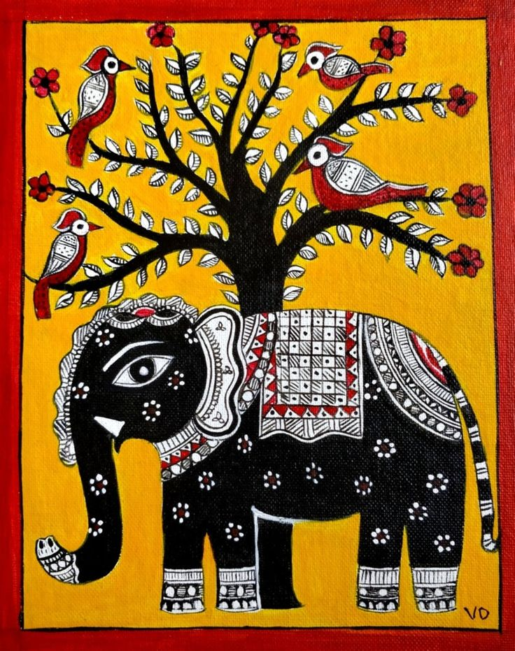

madhubani

Madhubani painting is one of the many famous Indian art forms. As it is practiced in the Mithila region of Bihar and Nepal, it is called Mithila or Madhubani art. Often characterized by complex geometrical patterns, these paintings are known for representing ritual content for particular occasions, including festivals, religious rituals, etc. The colors used in Madhubani paintings are usually derived from plants and other natural sources. These colors are often bright and pigments like lampblack and ochre are used to create black and brown respectively. Instead of contemporary brushes, objects like twigs, matchsticks and even fingers are used to create the paintings.
Madhubani paintings originated in the Mithila region of Bihar. Some of the initial references to the Madhubani painting can be found in the Hindu epic Ramayana when King Janaka, Sita’s father, asks his painters to create Madhubani paintings for his daughter’s wedding. The knowledge was passed down from generation to generation and the paintings began to adorn the houses of the region. The women of the village practiced these paintings on the walls of their respective home. Their paintings often illustrated their thoughts, hopes and dreams.
Over time, Madhubani paintings became a part of festivities and special events like weddings. Slowly, this art attracted connoisseurs of art as many contemporary Indian artists took the art on global stage. The traditional base of plastered mud wall was soon replaced by handmade paper, cloth and canvas. Since the paintings have been confined to a limited geographical range, the themes as well as the style are more or less, the same.